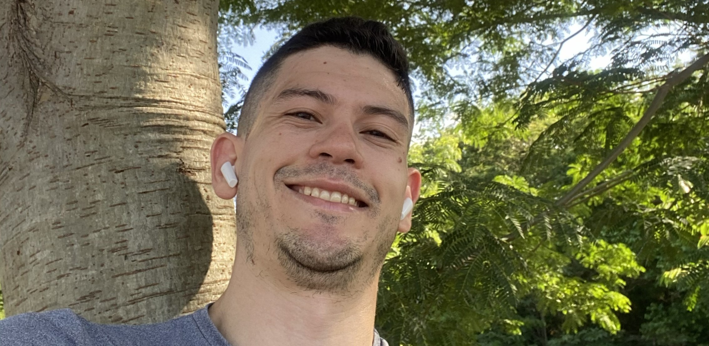

Thiago Muniz
Analista de Processos de TI
Automatizo processos com Power Automate e inteligência artificial para tirar o trabalho manual da frente das pessoas e devolver tempo para o que gera valor.
- Power Automate
- BPM/BPMN
- IA e chatbots
- Fluig
- Gestão de backlog
- 45+ fluxos automatizados em produção
- Certificado Microsoft PL-500 (Power Automate RPA)
- Pós-graduado em Gerenciamento de Produtos Digitais (FIAP)